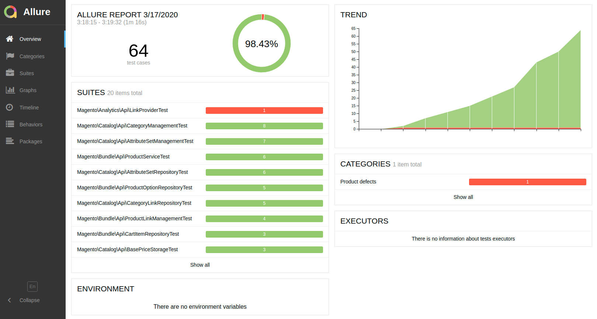

Allure Reporting
Allure is a powerful test reporting framework. It is fully compatible with PHPUnit and Codeception. This means that each type of test available in Magento 2 can be visualized.
Configuration
To enable Allure in your project environment, add to your .env file:
WARDEN_ALLURE=1
As a result both php-fpm and php-debug containers get additional mount /var/allure-results where the Test results should be saved.
PHPUnit Reports
To visualize your PHPUnit Tests results (Unit, Integration, API functional, Static) in Allure, you need to edit phpunit.xml file and find <listeners> section. If you have <listener class="Yandex\Allure\Adapter\AllureAdapter"> node, just change the path where logs are saved: <string>/var/allure-results</string> (please notice leading /).
<listeners>
<listener class="Magento\TestFramework\Event\PhpUnit"/>
<listener class="Yandex\Allure\Adapter\AllureAdapter">
<arguments>
<string>/var/allure-results</string>
...
Codeception Reports
Adjusting Codeception reports path is a little bit more complicated. Please find the dev/tests/acceptance/codeception.yml file, under Magento\FunctionalTestingFramework\Allure\Adapter\MagentoAllureAdapter you’ll find outputDirectory. Change it’s value to /var/allure-results.
extensions:
config:
Magento\FunctionalTestingFramework\Allure\Adapter\MagentoAllureAdapter:
deletePreviousResults: false
outputDirectory: /var/allure-results
Web Interface
Allure reports are available with your Web Browser on allure subdomain (eg. https://allure.magento2.test/). Reports are generated with 5 seconds interval.
